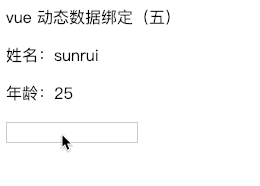

现在要实现最后一步了，如何在数据发生改变的时候，重新渲染 DOM。之前已经实现了数据绑定，模板渲染，现在考虑如何将这两者结合起来。
先上一张经典图来说明 vue 实现原理：
Vue 数据绑定原理主要是通过数据劫持结合发布者-订阅者模式方式来实现的。每个实例对象属性都有相应的 watcher 实例对象，在渲染的时候记录属性依赖，数据更新的时候通知 watcher 重新渲染。在这主要有几个重要的概念：
- Observer 监听器：主要对响应式对象的属性添加 getter/setter 方法，用于依赖收集和派发更新。
- Compile 解析器：实现模板指令的解析，以及绑定更新函数。
- Dep 订阅器：收集响应式对象的依赖关系，管理所有的观察者。
- Watcher 观察者：收到更新通知进行视图更新。
Observer
在之前实现的 Observer 里加入订阅器 Dep，实现观察者的管理。
1 | function Observer(data) { |
每个属性都有一个订阅器 Dep 与其对应，用来管理该属性的所有观察者。
依赖收集是什么意思呢？对于一个模板 {{ user.name }}，那么他的依赖就有 user.name 这个变量，依赖收集就是确定数据与视图的依赖关系。在触发 getter 的时候进行依赖收集，注意这里有一个重点：只有在 Dep.target 有值的时候才会进行依赖收集。也就是说，真正是因为 Vue 内部初始化数据的时候才去收集依赖，其他时候访问变量触发的 getter 就不进行收集，直接返回 value。 Dep.target是什么呢，看下面分析。
派发更新：当数据改变了，调用该属性 Dep 订阅器的 notify 方法，通知该订阅器的所有 watcher 去更新视图。例如，页面上有两处访问了 user.name，那么 user.name 的订阅器里就会有两个 watcher ，当数据更新的时候，会通知这两个 watcher 进行更新。
Dep
Dep 是依赖收集的容器，是一个 class。实际上是对 Watcher 的一种管理，记录哪些 Watcher 订阅了自己变化并在更新时进行通知。Dep 有个静态属性 target，是全局唯一的 Watcher。Dep 主要实现添加依赖 addSub 和通知 watcher 的更新 notify。
1 | function Dep () { |
Watcher
Watcher 是观察者，在初始化的时候需要将自己添加进订阅器 Dep 中，那如何添加呢？Observer 中的 getter 进行依赖收集的时候会执行添加观察者 Watcher 的操作，所以在初始化的时候只要触发了对应的 getter 就可以，也就是去获取一次属性值。如下：
1 | function Watcher(vm, exp, cb) { |
在初始化的时候Dep.target指向唯一的观察者，触发属性的 getter 添加监听，最后将 Dep.target 清空。
这儿有个 CompileUtil.parse 为了解析深层属性，返回最终的值。1
2
3
4
5
6
7
8
9
10
11CompileUtil.parse = function(exp) { // 解析多层路径
if (/[^\w.$]/.test(exp)) return;
var exps = exp.split('.');
return function(obj) {
for (var i = 0, len = exps.length; i < len; i++) {
if (!obj) return;
obj = obj[exps[i]];
}
return obj;
}
}
Compile
Compile解析器主要工作是两点
- 解析模板指令，初始化模板视图。
- 绑定模板指令节点与更新方法，初始化订阅器。
上节编译器 Compile 只是实现了第一点，现在要加上初始化的时候绑定更新的功能，在初始化视图的时候，初始化一个 watcher，此时将此 watcher 添加进该属性的 Dep 中，同时绑定更新函数，这样在数据更新的时候，调用此更新函数。1
2
3
4
5
6
7
8
9
10
11
12
13
Compile.prototype.compileText = function (node, exp) {
// 匹配 {{ }}替换
let self = this;
var newVal = CompileUtil.parse(exp)(this.vm.data);
this.updateText(node, newVal); // 初始化视图
new Watcher(this.vm, exp, function (value) { // 生成订阅器并绑定更新函数
self.updateText(node, value);
});
}
Compile.prototype.updateText = function (node, value) { // 只实现简单的替换
node.textContent = typeof value == 'undefined' ? '' : value;
}
最后，实现 vue 的初始化，根据上图，需要绑定 Observe 和 Compile 。
1 | function Vue(obj) { |
实现代码
效果如下：
